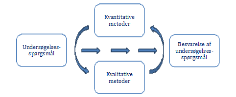

Når noget er kvantitativt, har vi at gøre med kvantum. Det kan være mængde eller antal. Laves der en undersøgelse på en kvantitative måde, undersøger man mange individer. Det er ofte spørgeskemaer.
” Kvantitative metoder er fx spørgeskemaer, som måler et kvantum - altså noget med mængder. ”
Kommunikation i multimediedesign, 2.udgave 2015, side 83
I kvantitative undersøgelser får man en bredere, men mindre dybdegående viden. Man kan udlevere det samme spørgeskema til 1000 forskellige danskere, dog har man ikke mulighed for at spørge ind til, hvorfor de svarer, som de gør. Man kan bruge det metode til at finde ud af, hvor mange mennesker der gør noget bestemt.
” Overordnet set anvender man kvantitative metoder til at undersøge, hvor mange mennesker der gør noget bestemt - fx besøger en hjemmeside, eller hvor ofte de gør det. ”
Kommunikation i multimediedesign, 2.udgave 2015, side 84
jhn.dk/interviewmetoder/kvantitative-og-kvalitative-metoder/
metodenu.systime.dk/kvantitativ metode/
Ved kvantitative undersøgelser, vil vi næsten altid få korte svar. Ude fra de korte svar, vil det være at få nye tilføjelser og informationer.Kommunikation i multimediedesign, 2.udgave 2015, side 84
Vi kan hellere ikke være sikker på konklusionen da det afhænger undersøgerens færdigheder og forforståelse og vi kommer ikke til at kunne læse vedkommendes kropsprog og dermed kan det være svært at observere om folk svarer ærligt.
metodenu.systime.dk/kvantitativ metode/
Kvalitative undersøgelser hjælper med at indsamle detaljerede / dybereliggende oplysninger (data). Man kan bruge det til at starte en undersøgelse med ved at opdage, forstå, fortolke, de problemer og muligheder, som folk tænker på. Kvalitative undersøgelser kan fordeles således; interview, fokusgrupper og observationsstudier.
https://metodenu.systime.dk/?id=132
Kommunikation i multimediedesign, 2.udgave 2015, side 83
Kommunikation i multimediedesign, 2.udgave 2015, side 88
Det, der også kendetegner kvalitative metode, er når vi går i dialog med folk eller observerer dem. Metoden bliver brugt når man ønsker at være mere sikre på forklaringer eller når man ikke er helt sikre på, man kender svarene. Man er selv en del af undersøgelsen når man bruger det metode, da man kan fortolke det ude fra sin egen forforståelse og færdigheder eller med den måde man svarer vedkommendes holdning på. Det er dermed vigtigt at have med i sin betragtning efterfølgende ved vurdering af resultater.
https://metodenu.systime.dk/?id=132
Kommunikation i multimediedesign, 2.udgave 2015, side 88
Kommunikation i multimediedesign, 2.udgave 2015, side 88
Da kvalitative undersøgelser handler om holdninger og meninger, har respondenten mulighed for at uddybe sine svar. .
” Det kvalitative interview går i dybden med enkeltindividers meninger og holdninger. Interessen gælder interviewpersonens `indre` i mental forstand...
Kommunikation i multimediedesign, 2.udgave 2015, side 88
jhn.dk/interviewmetoder/kvalitative og kvantitative undersøgelse/
jhn.dk/interviewmetoder/kvalitative og kvantitative undersøgelse/
Man kan f.eks. starte med at anvende kvalitativ metode til at indsamle inspiration til en efterfølgende kvantitativ undersøgelse og omvendt. Figuren hernede under, viser hvordan kvalitative og kvantitativ metode kan anvendes ved at supplere hinanden.
http://bibdok.dk/vaerktojer/kombination-af-kvantitativ-og-kvalitativ-metode.html
Transskribering betyder at omdanne lydoptagelser fra tale til tekst, og dermed få et overblik over dem, det er afgørende i analysen af interviewdata.
” Transskribering, hvor du skriver interviewene ud for at få et overblik over dem og for at kunne henvise til dem i analysen ”
Kommunikation i multimediedesign, 2.udgave 2015, side 92
Kvale1997, side 190